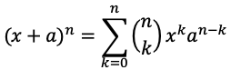
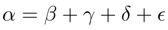
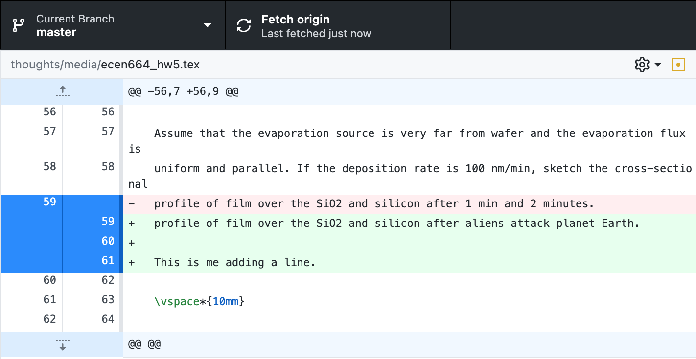

Pros and cons of using LaTeX vs. Microsoft Word, ideas on how to increase its prevalence.
For readers that don't know what LaTeX is, a brief primer.
TeX, pronounced "tech", is a typesetting system developed by Donald Knuth in the 1970s. LaTeX, pronounced "lay-tech", is a macro package that allows for documents to be written more easily in TeX.
The levels of TeX are as follows (paraphrased from the original):
- Distributions: Large, coherent collections of TeX-related software to be downloaded and installed. When someone says “I need to install TeX on my machine”, they're usually looking for a distribution.
- Front ends and editors: Used to create a document file. Some (e.g., TeXShop) are devoted specifically to TeX, others (e.g., Emacs) can be used to edit any sort of file. TeX documents are independent of any particular editor; the TeX typesetting program itself does not include an editor.
- Engines: Executable binaries which implement different TeX variants.
- Formats: TeX-based languages in which one actually writes documents.
- Packages: These are add-ons to the basic TeX system, developed independently, providing additional typesetting features, fonts, documentation, etc. A package might or might not work with any given format and/or engine; for example, many are designed specifically for LaTeX, but there are plenty of others, too. The CTAN sites provide access to the vast majority of packages in the TeX world; CTAN is generally the source used by the distributions.
In short, LaTeX allows for beautiful documents to be written and the user to be in control of every aspect of it. Want to add a coffee stain to a page? LaTeX's got you covered. Want to put in a circuit diagram without having to add a picture? Easy, albeit practice is required. Want your equations to not look like absolute garbage? LaTeX is your guy. Want to be made fun of and belittled in front of all of your closest friends, family, and colleagues at your first public conference because your paper formatting is atrocious and the equations mangled? Word's the way to go!
It's basically the same thing.
—Someone who has never used LaTeX
First, a look at equations in both LaTeX and Word, the purpose for which the former was created:
Can you guess which one is Word and which is LaTeX? The answer should be glaringly obvious, but can be revealed by hovering over the black spoiler box.
The differences in quality are stark:
What about Greek symbols?
The answer is again obvious. However, I couldn't find any official specifications on how Greek letters (or similar symbols) are supposed to be written, e.g., is upper-case sigma supposed to have a specific proportion ratio, i.e., X height to Y width? Given no official ruling, the LaTeX symbols reign supreme.
LaTeX offers thousands of packages designed to customize a document. CTAN has an alphabetical comprehensive list here. Take the memoir class, used for "typesetting poetry, fiction, non-fiction, and mathematical works." Its basic user manual is 615 pages long and covers anything and everything one would need to know. (Note: a class is the document format, while packages provide specific commands. Classes can include multiple packages. More info here.)
Word offers add-ins, which are a bit different than what LaTeX is designed for:
Word add-ins are one of the many development options that you have on the Office Add-ins platform. You can use add-in commands to extend the Word UI and launch task panes that run JavaScript that interacts with the content in a Word document. Any code that you can run in a browser can run in a Word add-in. Add-ins that interact with content in a Word document create requests to act on Word objects and synchronize object state.
Again, the purpose of LaTeX is to prepare and focus on the content of a document, not to interact with the content like the add-ins do. Packages and add-ins serve two separate functions, the latter of which is irrelevant to LaTeX.
Git works fairly well with .tex files, but not with Word (.doc, .docx, .docm) files. Terry Lambert explains the difference (highlights taken from his reply):
This is unsurprising [in regards to Git being a poor option for Word version control], because Git is actually an SCCS/VCS (Source Code Control System/Version Control System), and not a DMS (Document Management System).
Git is a version control system primarily for plain text files containing program source code.
Microsoft Word Documents have in-band markup, along with the text data, and are stored as binary files — this is true for both .doc and .docx files.
What this means is that the deltas and other features of Git will treat the files as opaque binary blobs, and will not be able to tell you the differences between one revision of the file and another revision of the file, even if the differences are relatively small.
In comparison, a .tex file is straight text that gets converted to PDF when built. This is what makes .tex files work so well: there's no "hidden" formatting like there is in Word—what the user sees is what Git sees.
This feature should absolutely be considered if version control is important to the document or group. After all, if it ain't Git, it ain't version control.
ESultanik explains LaTeX's longevity abilities:
TeX has been around for over thirty years, and the underlying language hasn't changed very much in that time. Has anyone ever tried using Word 2007 to load a file that was originally written in Word '97? Even if the file imports properly, chances are some of the page/line breaks are going to be off, possibly skewing the entire layout.
What if you had decided to write your document in Lotus Word Pro back in 1990? Would you be able to view/edit that document today? These problems almost never occur with (La)TeX.
A document that is typeset in (La)TeX today is likely to look exactly the same when you re-typeset it 10, 20, or 30 years down the road. Since TeX is stored in a human-readable plain text file, you also have the knowledge that you will always be able to edit the file in the future.
The most apparent issue with LaTeX is the steep learning curve beginners face. In the land of a gagillion commands, packages, and preamble requirements, it is easy to get both overwhelmed and confused amid the chaos. In the beginning, almost all the commands will need to be looked up, syntax checked, and regular trial-and-error performed to see if the code is producing what's desired. Googling the question returns a plethora of answers, all slightly different in their own ways.
Word is mostly the opposite. Any Microsoft Bro can open up Word, start typing, and get roughly what they want with minimal instructions. Inserting pictures, creating tables, aligning objects/text, and customizing the layout are all fairly straightforward, if not easily Google-able.
But redemption! In my experience, the commands used follow a rough Pareto distribution/rule: a majority of the commands used during actual writing are only a small minority of the commands available. For example, my most commonly-used commands were as follows after glancing through old homework assignments:
\frac: Fraction
align: Environment used to align related equations to one another
\cdot: Dot used for multiplication
\int: Integral
\hspace: Manually sets whitespace between elements
\tr: Formats text to be normal in math environments
I occasionally use \infty (infinity symbol), Greek letters, and select math objects (\partial, matrix environments). That's really it for the average university STEM student, which I was. Unique, one-off commands can easily be found via Google or reference sheets.
Yet another one of niplav's great ideas is for researchers to simply stop citing papers published in Word. It's that simple. No Word papers, regardless of the quality of work. If you want to get published, sit down for a few hours and learn the basics of LaTeX. Or better yet, solicit an undergrad or intern and disguise their slave labor as a "valuable volunteering experience".
This would take an immense amount of cooperation from researchers everywhere, as well as journals to not actually publish Word manuscripts.
Similar to not citing Word papers, journals should also immediately stop accepting Word manuscripts.
First, it decreases the prestige of the journal. It's like allowing déclassé people to dine in a fancy restaurant. Sure, they showed up in a foreign car and wear the designer clothing, but at a closer look, they are just as tacky as their counterparts tearing up the local Waffle House. LaTeX is the patron that causes people to give five stars to the restaurant for a "quiet, professional atmosphere" that leads to a "quality experience". Unfortunately, even some of the most prestigious journals (1, 2, 3) still prefer Word-based submissions. (I understand this if the content is not formula- nor formatting-heavy. Word can do just fine for basic text.)
Second, if there is some type of standardized template authors are requested to use for submission, the journal only needs to update the LaTeX version.
Some users on the Academia Stack Overflow provide some insight as to why journals prefer Word over LaTeX here.
Practically all researchers who publish went to some type of university that required coursework for graduation. A mandatory course titled "Scientific Writing" can be implemented, which teaches the writing process while learning LaTeX along the way. The final project would be a complete manuscript (content doesn't necessarily need to be there, but the formatting does) written in LaTeX on the student's topic of choice, related to their research or not. This would be a first-semester course to set the expectation for the remaining years.
Some resources for learning LaTeX:
TeXstudio is an integrated writing environment for creating LaTeX documents. Our goal is to make writing LaTeX as easy and comfortable as possible. Therefore TeXstudio has numerous features like syntax-highlighting, integrated viewer, reference checking, and various assistants. For more details see the features.